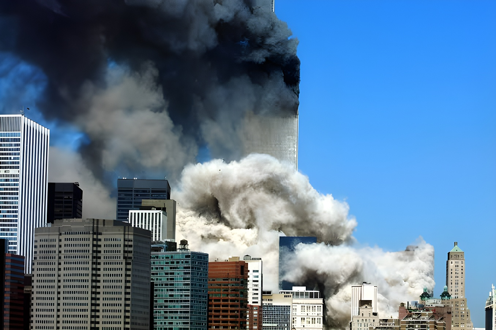

À quelques jours du 25ᵉ anniversaire des attentats du 11 septembre 2001, le maire de New York Zohran Mamdani a rendu publiques plus de 170 000 pages d'archives municipales sur la qualité de l'air à Ground Zero, dont le très attendu « mémo Harding » et le contenu de 68 boîtes redécouvertes en 2025. Obtenus après le règlement de deux procès intentés par l'association 9/11 Health Watch, ces documents confirment que plusieurs administrations municipales avaient connaissance des risques liés à l'amiante et aux poussières toxiques, tout en assurant publiquement que l'air était respirable.
Le 8 septembre 2026, lors d'une conférence de presse à l'Hôtel de Ville aux côtés de l'humoriste Jon Stewart et de représentants des premiers intervenants, Zohran Mamdani annonce la publication d'un premier lot d'environ 170 000 pages issues des archives municipales sur la santé, la qualité de l'air et la réponse de la Ville aux attentats du 11 septembre. Ces documents sont désormais consultables sur un nouveau portail public, nyc.gov/sept11docs, dont l'administration a budgété jusqu'à 34 millions de dollars pour la création et le fonctionnement au titre de l'exercice 2027.
Parmi ces archives figurent le contenu de 68 boîtes localisées seulement en 2025 dans un bureau du Department of Environmental Protection, malgré de multiples demandes déposées au titre de la loi sur la liberté de l'information (FOIL). La ville précise que le portail sera enrichi progressivement au cours des douze prochains mois, à mesure que les services juridiques municipaux examinent des documents supplémentaires et retirent les informations personnelles identifiables.
« Les dirigeants en qui ils avaient confiance leur ont menti et leur ont dit qu'ils pouvaient respirer sans danger. »
— Zohran Mamdani, conférence de presse, 8 septembre 2026Les archives comprennent le « mémo Harding », rédigé en octobre 2001 par le vice-maire adjoint de l'époque, Robert Harding, et qui montre que la municipalité avait conscience des dangers sanitaires et des risques juridiques associés au nettoyage de Ground Zero. Ce document tranche avec les déclarations publiques de la responsable de l'Agence de protection de l'environnement (EPA), Christine Todd Whitman, qui affirmait dès le 18 septembre 2001 que les relevés de surveillance indiquaient un air sûr à respirer autour du World Trade Center.
Un autre document, daté du 28 février 2002 et rédigé par un conseiller politique du maire de l'époque Michael Bloomberg, résume les inquiétudes du représentant Jerrold Nadler sur la qualité de l'air intérieur à Lower Manhattan. Il avertit que la Ville pourrait être exposée à des problèmes d'image et à une vague de poursuites judiciaires si ces risques n'étaient pas communiqués aux habitants.
L'EPA assure publiquement, relevés à l'appui selon elle, que l'air autour du World Trade Center est sûr à respirer.
Le mémo Harding évoque en interne les dangers sanitaires et la responsabilité légale de la Ville.
Un mémo de l'administration Bloomberg relaie les alertes du représentant Nadler sur l'air intérieur.
L'association de locataires d'Independence Plaza North dénonce un nettoyage jugé incomplet à Tribeca.
Des tests au lycée Stuyvesant révèlent un taux d'amiante très supérieur aux seuils de nettoyage de l'EPA.
Les documents montrent que dix mois après les attentats, des traces d'amiante ont été détectées sur le toit d'un immeuble du 15 John Street, à moins d'un kilomètre du site du World Trade Center. Au lycée Stuyvesant, situé à moins d'un kilomètre au nord de Ground Zero, des tests réalisés en août 2002 sur un échantillon de moquette de l'auditorium ont mesuré une concentration d'amiante environ 500 fois supérieure au seuil à partir duquel l'EPA recommandait un nettoyage professionnel des poussières.
À Tribeca, l'association de locataires d'Independence Plaza North écrit en juillet 2002 à l'EPA pour dénoncer un chantier de nettoyage jugé incomplet et dangereux, réclamant des tests plus rigoureux par ultrasonication plutôt que de simples inspections visuelles. Des relevés effectués par la suite montreront que certains logements de l'immeuble restaient contaminés au-delà des seuils sanitaires jusqu'en 2003.
| Document | Date | Contenu révélé |
|---|---|---|
| Communiqué EPA (Whitman) | 18 sept. 2001 | Air annoncé « sûr à respirer » |
| Mémo Harding | Oct. 2001 | Risques sanitaires et juridiques connus en interne |
| Mémo administration Bloomberg | 28 fév. 2002 | Alerte sur l'air intérieur et les poursuites possibles |
| Lettre IPNTA à l'EPA | Juil. 2002 | Nettoyage jugé insuffisant à Tribeca |
| Tests du lycée Stuyvesant | Août 2002 | Amiante ≈ 500 fois le seuil de nettoyage |
« L'obstruction délibérée de la vérité par Giuliani est une gifle infligée aux héros exposés à Ground Zero. »
— Jerrold Nadler, représentant au Congrès, 8 septembre 2026La publication de ces archives met fin à un contentieux mené depuis des années par 9/11 Health Watch, qui réclamait en justice l'accès à ces documents. Le Corporation Counsel de la Ville, Steven Banks, explique que les services juridiques ont travaillé directement avec l'association pour identifier les pièces à inclure dans cette première publication. Plusieurs élus, dont l'ancienne représentante Carolyn Maloney et la conseillère municipale Gale Brewer, saluent une avancée réclamée de longue date par les intervenants, les survivants et les familles de victimes.
Selon le World Trade Center Health Program, des milliers de personnes exposées aux poussières et à la fumée du 11-Septembre sont depuis décédées de maladies liées à cette exposition, tandis que beaucoup d'autres continuent de vivre avec des pathologies respiratoires ou des cancers. L'administration Mamdani annonce la création de postes dédiés au sein de deux agences municipales pour aider les New-Yorkais à faire valoir leur présence dans la zone d'exposition et à accéder aux programmes fédéraux issus du Zadroga Act.
Aucun de ces documents ne change le passé : les New-Yorkais qui ont respiré la poussière de Ground Zero resteront malades, et ceux qui en sont morts ne reviendront pas. Mais la publication de ces 170 000 pages, obtenue de haute lutte après un quart de siècle de demandes restées sans réponse, déplace la question de la mémoire vers celle de la preuve : elle donne aux survivants des pièces concrètes pour faire reconnaître leur exposition et accéder aux dispositifs de compensation, et elle rappelle qu'une administration municipale a le pouvoir, des décennies plus tard, de rendre des comptes sur les choix de celles qui l'ont précédée. Reste à savoir si les dizaines de milliers de pages encore à venir apporteront d'autres révélations, ou si l'essentiel de ce que la Ville savait a déjà été dit.
Just days before the 25th anniversary of the September 11, 2001 attacks, New York City Mayor Zohran Mamdani released more than 170,000 pages of municipal records on air quality at Ground Zero, including the long-sought "Harding Memo" and the contents of 68 boxes rediscovered in 2025. Obtained after the settlement of two lawsuits brought by advocacy group 9/11 Health Watch, the records confirm that several city administrations were aware of the dangers posed by asbestos and toxic dust while publicly insisting the air was safe to breathe.
On September 8, 2026, at a City Hall news conference joined by comedian Jon Stewart and representatives of first responders, Zohran Mamdani announced the release of an initial batch of roughly 170,000 pages of city records on health, air quality and the government's response to September 11th. The documents are now available through a new public portal, nyc.gov/sept11docs, which the administration has budgeted up to $34 million to build and maintain in the FY27 budget.
Among the released material are the contents of 68 boxes located only in 2025 inside a Department of Environmental Protection office, despite repeated Freedom of Information Law (FOIL) requests over the years. The city says the portal will be updated regularly over the next 12 months as the Law Department reviews additional records and removes personally identifiable information.
"The leaders they trusted lied and told them they were safe to breathe."
— Zohran Mamdani, news conference, September 8, 2026The archive includes the "Harding Memo," written in October 2001 by then-Deputy Mayor Robert Harding, which shows the city understood the health dangers and legal exposure tied to the Ground Zero cleanup. That internal assessment stands in contrast with public statements from then-EPA Administrator Christine Todd Whitman, who said on September 18, 2001, that monitoring results indicated the air around the World Trade Center was safe to breathe.
Another record, a February 28, 2002 memo from a senior policy adviser to then-Mayor Michael Bloomberg, summarized concerns raised by Rep. Jerrold Nadler about indoor air quality in Lower Manhattan. It warned that the city could face public-relations problems and a wave of lawsuits if residents were not properly informed of the risks.
The EPA publicly states, citing its own monitoring, that the air near the World Trade Center is safe to breathe.
The Harding Memo internally flags health dangers and the city's legal liability.
A Bloomberg administration memo relays Rep. Nadler's warnings about indoor air.
The Independence Plaza North Tenant Association says Tribeca cleanup work is incomplete.
Tests at Stuyvesant High School find asbestos levels far above EPA cleanup benchmarks.
The records show that ten months after the attacks, traces of asbestos were found on the roof of a building at 15 John Street, less than a mile from where the World Trade Center once stood. At Stuyvesant High School, less than a mile north of Ground Zero, testing of an auditorium carpet sample in August 2002 measured asbestos concentrations roughly 500 times higher than the level at which the EPA called for professional dust cleanup.
In Tribeca, the Independence Plaza North Tenant Association wrote to the EPA in July 2002 to argue that cleanup work at its buildings had been incomplete and poorly protected, calling for more rigorous ultrasonication testing rather than simple visual inspections. Later testing showed some apartments in the complex remained contaminated above safety thresholds as late as 2003.
| Document | Date | What it reveals |
|---|---|---|
| EPA press release (Whitman) | Sept. 18, 2001 | Air declared "safe to breathe" |
| Harding Memo | Oct. 2001 | Health and legal risks known internally |
| Bloomberg-era memo | Feb. 28, 2002 | Indoor-air warnings and lawsuit risk |
| IPNTA letter to EPA | Jul. 2002 | Tribeca cleanup called incomplete |
| Stuyvesant HS testing | Aug. 2002 | Asbestos ≈ 500x cleanup threshold |
"Giuliani's intentional obfuscation of the truth is a slap in the face to the heroes."
— Rep. Jerrold Nadler, September 8, 2026The release ends a long-running legal battle led by 9/11 Health Watch, which had sued the city for access to the records. Corporation Counsel Steven Banks said the Law Department worked directly with the group to identify which records to include in this first release. Several elected officials, including former Rep. Carolyn Maloney and Council Member Gale Brewer, welcomed a step long demanded by responders, survivors and victims' families.
According to the World Trade Center Health Program, thousands of people exposed to 9/11 dust and smoke have since died of related illnesses, while many more continue to live with respiratory conditions and cancers. The Mamdani administration says it will create dedicated staff positions at two city agencies to help New Yorkers document their presence in the exposure zone and access federal programs created under the Zadroga Act.
None of these documents can rewrite the past: New Yorkers who breathed in Ground Zero dust will remain sick, and those who died from it will not come back. But the release of these 170,000 pages, won after a quarter-century of unanswered requests, shifts the question from memory to evidence — giving survivors concrete material to prove their exposure and claim compensation, and showing that a city government can, decades later, be made to answer for the choices of those who came before it. What remains unclear is whether the tens of thousands of pages still to come will bring further revelations, or whether most of what the city knew has already been said.